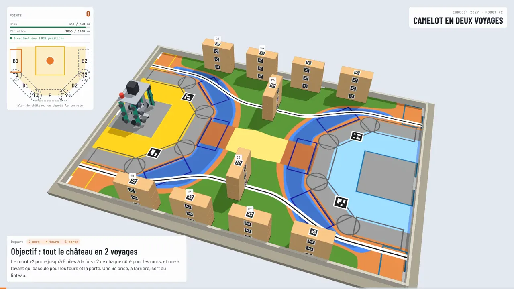
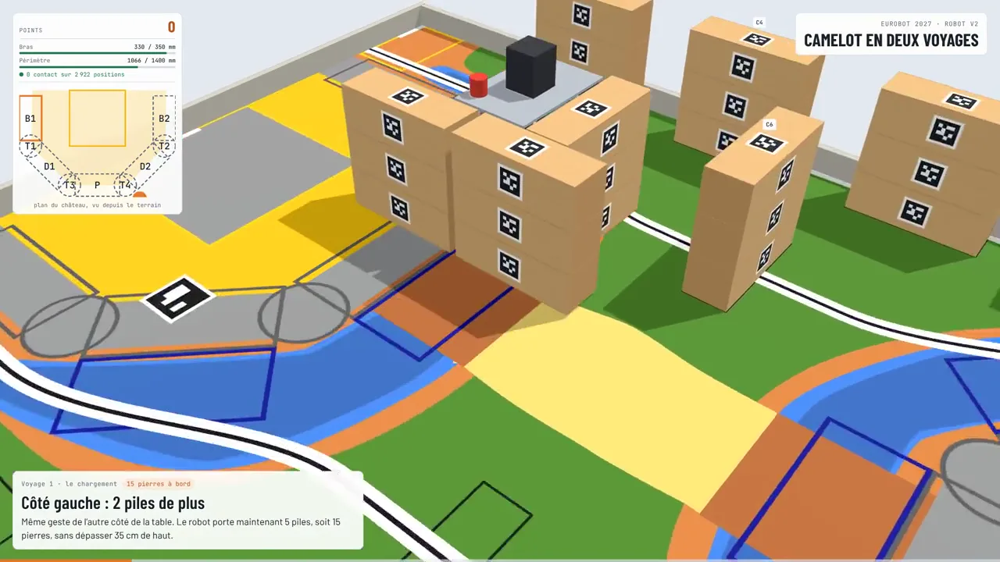
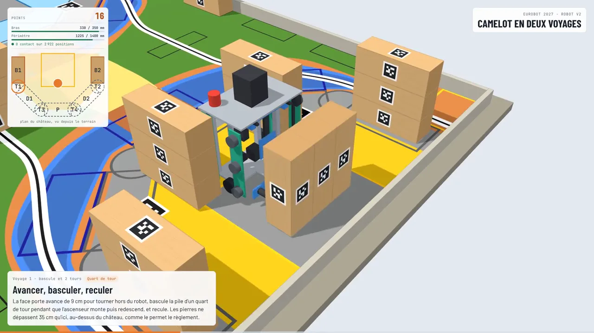

The competition in a nutshell
The French Robotics Cup is the French qualifier of Eurobot, an international robotics contest for students and young amateurs. Every year the organisers publish a new game, and teams have about eight months to build a robot for it from scratch. The three best French teams go on to the European final.
A match works like this:
- Two robots, one table. Two teams face off on a 3 m × 2 m table, each starting from its own corner.
- 100 seconds. A team member pulls a cord to start the robot. From then on, nobody may touch it.
- Fully autonomous. There is no remote control. The robot has to know where it is, find the game pieces, and detect the opposing robot so it doesn't crash into it.
- Strict size limits. At the start, the robot must fit inside a 1.2 m loop of string (1.4 m once its arms are out) and stay under 35 cm tall.
- Points. Referees count points at the end. Anything still held by a robot when time runs out doesn't count.
This year's game: The Legend of Camelot
The 2027 theme is King Arthur. The main task is to build your castle: 30 cardboard "stones" (32 × 11 × 11 cm boxes of about 90 g) start in quarries around the table, and each team builds its castle along the ramparts on its side.
The castle plan has three kinds of structures:
- Wall: 3 stones lying flat and stacked, in a rectangular zone.
- Tower: 1 stone standing upright, in a circular zone.
- Gate: 2 standing stones with a third laid across the top, built only once per castle.
Teams can earn extra points in other ways: raising their Grail as high as possible, sending small helper robots to attack the opponent's moat, throwing foam cannonballs into the enemy courtyard, and parking back in the throne room at the end. The rules themselves recommend picking a few actions and doing them reliably, so we focused on the castle, which is where most of the points are.


Our strategy: the whole castle in two trips
Driving back and forth costs most of a match, so we designed the robot to carry as much as possible at once. It holds up to 5 stacks of 3 stones at the same time: two on each side for the walls, and one at the front for the towers and the gate. A sixth grip at the back handles the gate's lintel.
The video at the top of this page shows the full simulated match. The panel in its corner tracks the score, the robot's height and perimeter against the limits, and which parts of the castle are done.
Trip 1: loading and building the main walls
- The front grip picks up a full stack from the central quarry with 3 suction cups, and a lift raises it 5 mm.
- The robot loads two stacks on each side, gripping each stone by its end with one suction cup. It now carries 15 stones and stays under 35 cm tall.
- It drives into its castle and slides each side stack into place for the back walls.
- The front stack is tipped a quarter turn so the stones lie flat. Stones may only go above 35 cm over the castle, so the tipping happens there.
- A piston pushes single stones forward to stand them up as the two back towers. The robot then turns 45° to set the diagonal walls.
- On its way out, it uses the last front stone for a third tower.




Trip 2: the gate
- The back grip takes the top stone from a quarry to use as the lintel. The front grip takes the last full stack.
- One stone from the front stack becomes the fourth tower.
- Two pistons push out the gate's pillars together, 11 cm apart.
- The robot turns around, slides the lintel over the pillars, and lowers it into place. The gate is complete.
- The robot parks in the throne room for the end-of-match points.
The result is a complete castle with 4 walls, 4 towers and the gate, worth 89 points under the scoring we used for planning. The official scoring will be published with the final rules.
Why simulate first
The simulation lets us test the strategy and the robot's size before cutting any parts. At every moment of the match it checks the rule limits: height, perimeter, and whether the robot touches anything it shouldn't. It also shows how much margin we have. For example, building the back towers before the diagonal walls leaves at least 2 cm of clearance when placing them.
Current status
The strategy and the robot's overall design are set. The team is now designing and building the mechanisms, ready for the competition in May 2027.